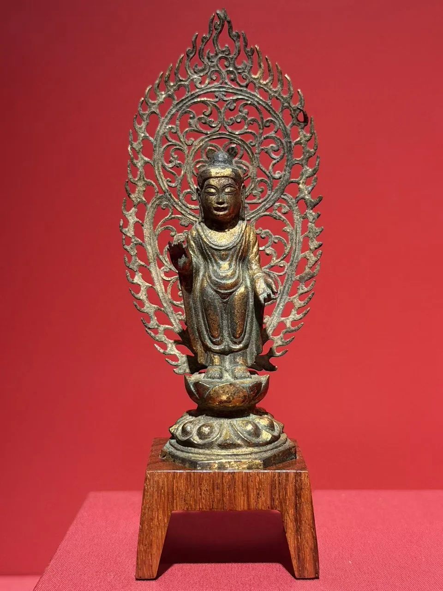
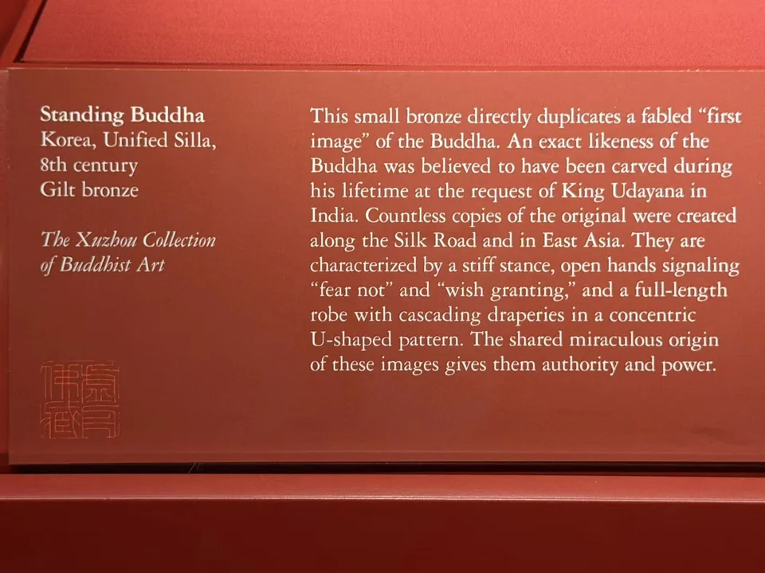

THE XUZHOU COLLECTION
佛立像
Standing Buddha
红墙透过火焰与卷草，成为背光中的空隙。
“我等欲作形像，亦可恭敬承事作礼。”

- 地区
- 朝鲜半岛
- 年代
- 统一新罗，8世纪
- 材料
- 鎏金青铜
- 收藏
- 虚舟收藏（私人收藏）
- 观看地点
- 休斯顿美术馆（MFAH）
- 尺寸
- 12.1 × 4.4 × 3.8厘米（据收藏图录）
作品札记
双肩覆在衣下，胸前的U形衣纹一层层垂落，到了下身，又拉成长长的弧线。衣服没有把身体藏进一整块金属里：胸腹的隆起、并立双腿的体量，仍从褶纹之间显现。金色留在衣褶的凸面，与凹处的暗色交替，使这些曲线更容易辨认。
收藏图录将这种贴体衣褶联系到“湿衣式”：说的是衣料仿佛贴着身体的视觉效果。作者把它放在7世纪末至8世纪东亚共享的造型风尚中理解，既涉及唐代对印度相关传统的吸收，也有统一新罗的本地化处理，不能据此画出本像确定的传承路线。
《Approaching the Buddha: Transmission and Transformation》（2026），Cat.24，p.100 ↗
右手抬起、掌心向前，与施无畏印相联系；较低的左手向外敞开，与与愿印相联系。两只手传达安慰与回应愿望的意思。图录还提到统一新罗造像较大的头部和近于孩童的比例；这尊面容圆满、身体紧凑，因而显得亲近，却仍是成年佛的形象。小型造像适于近距离供养礼敬，本像原来供在何处、由谁使用，尚不清楚。
《Approaching the Buddha: Transmission and Transformation》（2026），Cat.24，p.100 ↗
红墙透过火焰与卷草，成为背光中的空隙。圆形头光围住面容，外缘火焰向上伸展，卷草在其间回旋。图录作者认为，镂空减轻了金属在视觉上的沉重感，与中央饱满的身体呼应。目光可以停在衣纹上，也可以穿过背光：实与空的交替，让小像不显得局促。
《Approaching the Buddha: Transmission and Transformation》（2026），Cat.24，p.100 ↗
让思念有一个可以礼敬的形象
《增壹阿含经》的传说中，佛陀暂离人间，优填王因思念而忧苦，群臣于是提议造像，王命工匠以栴檀制作如来形像。开篇引文正是群臣的话。形像让思念有了可以面对、承事与作礼的对象；这是经典对造像的讲述，并非已经证实的佛像起源史。
收藏图录把本像的双手手印、通肩衣与贴体U形衣纹联系到传统所谓“优填王式”，同时提醒：这种形式后来也用于其他佛的造像。因此，这个名称提示的是图像传统，不能单独确认本像的佛名，更不能把它视为传说中的原像。
《Approaching the Buddha: Transmission and Transformation》（2026），Cat.24，p.100 ↗
比较阅读：两种背光
与同辑较晚的实心叶形背光佛并看，区别不只在外轮廓。那件的背光承载三尊小坐佛，视线停留在板面；这一件则让红墙穿过卷草，把中央佛身衬得更饱满。两件以不同方式组织身体与背光，也让照片中的背景参与了观看。
书目与资料说明
Hao Sheng著，多位学者参与撰写，《Approaching the Buddha: Transmission and Transformation》，休斯顿美术馆出版、耶鲁大学出版社发行，2026年，128页，ISBN 9780300286427。本件为Cat.24，p.100；尺寸与条目解读依据本次提供的研究资料整理，出版信息另据出版社官网核对。
地区、年代与材料沿用现场展签：朝鲜半岛，统一新罗，8世纪，鎏金青铜。
《Approaching the Buddha: Transmission and Transformation》（2026），Cat.24，p.100 ↗
现场展签与原始记录

- 题名
- Standing Buddha
- 地区
- Korea
- 年代
- Unified Silla period, 8th century
- 材料
- Gilt bronze